賽題九-海綿-決賽實驗數據及結論
賽題研析
海綿是一種多孔材料，本實驗所使用的海綿是由塑膠材料發泡而成的。許多的細孔讓海綿接觸到水面時會因為毛細現象因而吸入海綿之內。然而不同種類的海綿具有不同大小的孔隙且與水分子間的作用力的大小都不同，所以不同種類的海綿其吸水速率或是吸水量......等性質，都會受到這些海綿本身的性質影響。
然而這些複雜的物理性質會共同影響海綿在吸水方面的數據，但是有些性質的測量的難度不低，例如:海綿孔隙的平均大小、孔隙、與水分子間的吸引力……等。可能需要借助顯微鏡等精細的實驗器材才能確定這些性質，這種方法似乎有點過於麻煩了。因此想說在吸水量、壓縮深度這些相對起來測量難度比較低的物理量之間是否存在著某種關係，讓人知道了其中一種數據後便可以推敲出另外一種的數據。
我們組別想要了解海綿受重物擠壓下的形變量與吸水量，測量不同重量下兩組實驗的差異，並且將四組實驗做數據分析，比較兩組實驗數據的差異。
科學原理
-
內聚力與附著力
- 內聚力:指的是同類分子間的作用力，在這邊就是水分子之間的作用力，方向對稱為液體分布。
- 附著力:指的是異類分子間的作用力，在這邊就是水分子與海綿間的作用力，方向與接觸面垂直。
作用力的大小與分子間距離有關，當分子間距小於r0時，作用力呈現斥力，大於r0時則表現為引力。 圖1-1
圖1-1 -
表面張力
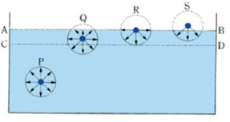圖1-2因為液體表面的液體蒸發，表面分子稀疏，導致表面的水分子間距大，分子間作用力表現為引力，使液面產生收縮的效果。此作用力會使得表面形成表面膜，並會抵抗表面膜的擴張，也就是這個作用力會使得液體表面積縮成最小，所以由此可知，表面張力的定義為單位長度的拉力。 表面張力T=拉力F/單位長度ΔL (牛頓/公尺)，水的表面張力約為0.07275N/m，算是表面張力相當大的液體。 -
浸潤與非浸潤
當液滴位於一個表面時固、液、氣表面的交點受到液體內部的內聚力與跟接觸面的附著力，當兩個力的大小不同就會造成浸潤與非浸潤情形。- 內聚力大於附著力:兩者間的合力指向液滴，造成液滴收縮，此時的θ(接觸角)大於90度，這種狀況稱為非浸潤或疏水。
- 內聚力小於附著力:合力方向指向接觸面，造成液滴有攤平在表面的趨勢，此時θ小於90度，這種狀況稱為浸潤或潤濕。
 圖1-3
圖1-3 -
毛細現象
當容器進入液內時，接觸的地方會有些微彎曲，此現象就是毛細現象。 固、液、氣的交界處在容器上，受到內聚力(F1)與接觸力(F2)，當F2 > F1/√2 時兩力合力指向液體外，如圖1-4左側。當F2 < F1/√2 時兩力合力指向液體內，如圖1-4右側。 由於液面需垂直於合力方向，所以這樣會造成液面的上凸或下凹(如圖1-5)。如果F2 > F1/√2 ，力平衡後會讓接觸角θ小於90度，因此作用在管壁一周的表面張力會有一個向上的分力，造成管內液體升高。如果F2 < F1/√2 ，會讓接觸角θ大於90度，因此作用在管壁一周的表面張力會有一個向下的分力，造成管內液體降低。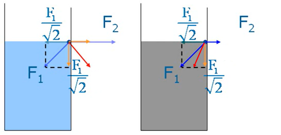圖1-4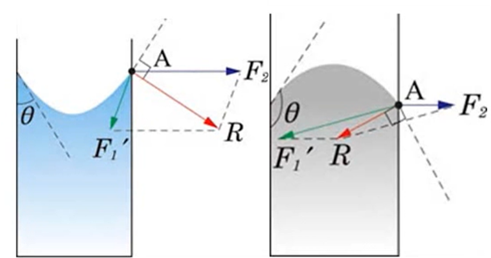圖1-5若想知道毛細管上升或下降的高度，可由力學分析來求得，液柱受到向上的的力為，表面張力在圓周上的鉛直分力(Tcosθ*2πr)、底部壓力向上的總力(P液*πr2)，受到向下的力為，重力(mg)、大氣壓力向下的總力(P氣*πr2)。則可列出方程式為:Tcosθ*2πr + P液*πr2= mg+ P氣*πr2。又P氣= P液，m=hπr2ρ。得解h=2Tcosθ/(ρgr) 若接觸角大於90度則cosθ小於0，h也小於 0，代表液柱下降。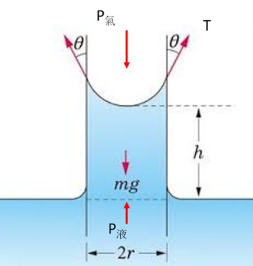圖1-6註解:- h:液柱高度差
- T:表面張力
- Θ:接觸角
- m:液柱質量
- g:重力加速度
- P液:液柱底部壓力
- P氣:大氣壓力
- r:液柱半徑
- ρ:液柱密度
物理模型
-
推論
我們將海綿放入水中後發現不管放置多久，都只會有浸入水面下附近 的部分有吸水，就算將海綿全部浸入水面後，拿起來時在肉眼可見的粗孔隙部分內的水，大部分會流失，但是如果此時用力擠壓海綿會發現內部確實有很多水分。因此我們推論海綿材料的內部不只有肉眼可見的粗孔隙，還有許多不連續的細小孔隙，而不是只有靠肉眼可見的粗孔隙來吸水，這也能解釋為什麼將海綿拿起後，內部的水分不會按照毛細現象的理論高度而直接滴落。 -
模型
將海綿置入水面後利用重物使其壓縮，再將重物移除，此時海綿會恢復形狀，由於海綿的恢復力會使得海綿內部具有負壓，因此可以將壓縮前碰觸到水面的海綿內部浸潤，這樣即使是恢復後沒有接觸到水面的海綿也可以吸到水。因此海綿的水量應該要與形變量及本身吸水的能力有關。
實驗設計與規劃
-
問題與假設
- 問題:吸水量是否與形變量與自身吸水程度有關？
- 假設:吸水量正相關於形變量與自身吸水能力。
控制變因- 環境溫度
- 環境濕度
- 海綿體積
- 海綿表面積
- 盆中水量
操作變因- 實驗(一):海綿種類
- 實驗(二):海綿種類
- 實驗(三):施加外力
- 實驗(四):施加外力
- .
應變變因- 實驗(一):海棉乾重
- 實驗(二):最大吸水量
- 實驗(三):形變量
- 實驗(四):吸水量
- .
-
實驗設計
實驗器材:海綿*6(編號1到6)、大臉盆*1、塑膠板*1、電子秤*1、美工刀*1、直尺*1、重物(1kgw、1.5kgw、2kgw) *1、竹籤*8、接水盤*1、雙面膠*1圖2-1 海綿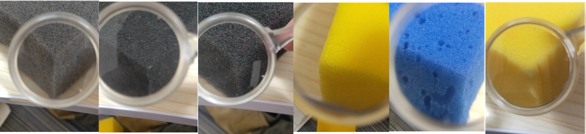註解:由左至右依序為編號1至6-
實驗(一):乾重的測量
- 將6種不同的海綿利用直尺與美工刀切成7.00*7.00*3.80cm3的大小。
- 將海綿其中一面利用雙面膠黏上7.00*7.00cm2大的塑膠板。
- 測量不同種的海綿重量，每種各測量5次，平均後的重量稱為平均乾重。
-
實驗(二):最大溼重的測量
- 不同種海綿依序浸入水中後吸飽水(塑膠板並未浸入水面)。
- 將海綿拿出來後，利用竹籤與塑膠盤製成的簡易晾架使其在任何方向都不會滴水(不受外力擠壓的情況下)。
- 將每一種海綿都測量8次後求平均，平均後的數值稱為平均最大濕重。
- 將平均最大濕重減掉平均乾重後得到平均最大吸水量。
圖2-2 簡易晾架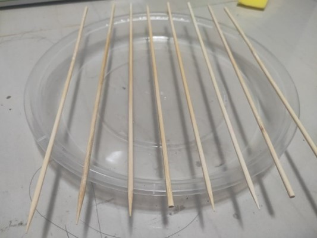註解:在此實驗中我們將吸水量定為海綿所能吸住的水份。實驗(三):測量海綿受不同重量之重物擠壓的形變量
- 將不同重量的重物分別放在塑膠板上。
- 測量海綿受不同重物(1kgw、1.5kgw、2kgw)擠壓後的形變量並將之記錄，每種各測量5次。
- 將原長扣掉變化量得到壓縮後高度
實驗(四):測量乾海綿在裝水的臉盆受不同重量之重物擠壓吸水後的重量
- 將1kgw、1.5kgw、2kgw的重物依序放在塑膠板上，將裝置放進裝有200克水的大臉盆中。
- 放入後5秒將重物拿起。
- 等待海綿恢復形狀後將海綿拿出。
- 利用簡易晾架使其不再滴水。
- 測量海綿受重物擠壓後的吸水量並將之記錄，每種做8次。
- 將測得平均重量扣掉平均乾重得到平均吸水量。
-
實驗結果與分析
-
實驗數據
-
實驗(一):乾重的測量
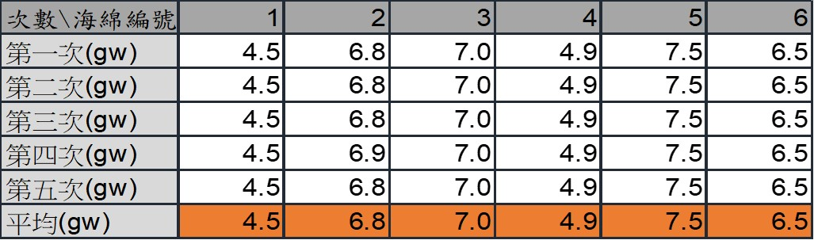表3-1 -
實驗(二):最大溼重的測量
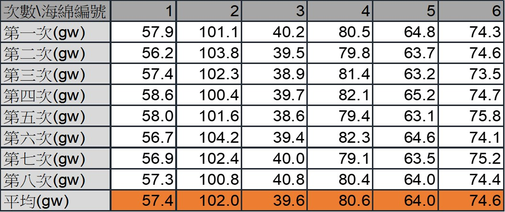表3-2 -
實驗(三):測量海綿受不同重量之重物擠壓的形變量
1.0kgw之重物
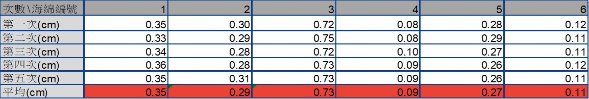表3-31.5kgw之重物
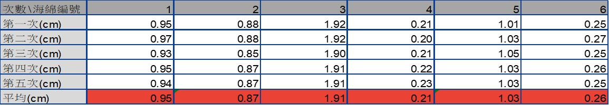表3-42.0kgw之重物
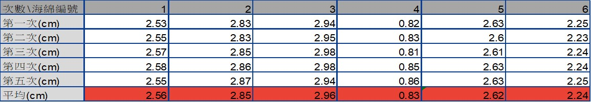表3-5
-
實驗(四):測量乾海綿在裝水的臉盆受不同重量之重物擠壓吸水後的重量
1.0kgw之重物
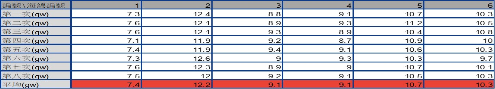表3-61.5kgw之重物
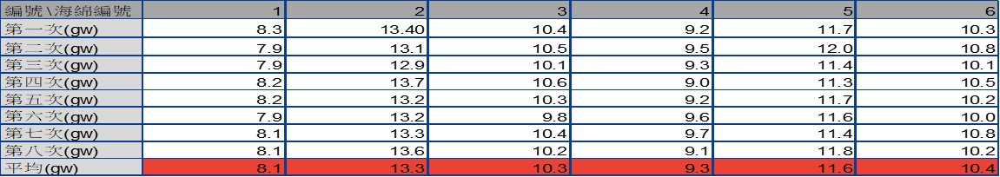表3-72.0kgw之重物
表3-8
-
-
實驗數據分析
- 將實驗(一)所得平均乾重做成柱狀圖。
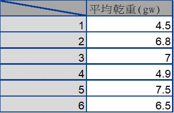表3-9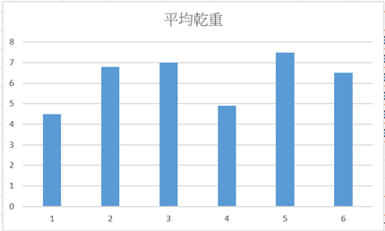圖3-1
- 將實驗(二)所得的平均最大吸水量(平均最大濕重-平均乾重)做成柱狀圖。
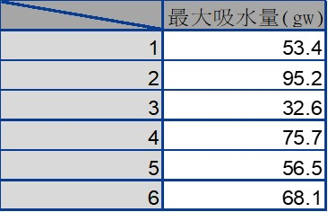表3-10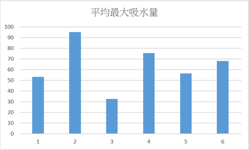圖3-2
- 將實驗(三)數據推導得出的受壓後的高度做成柱狀圖。
表3-11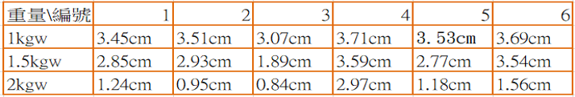圖3-3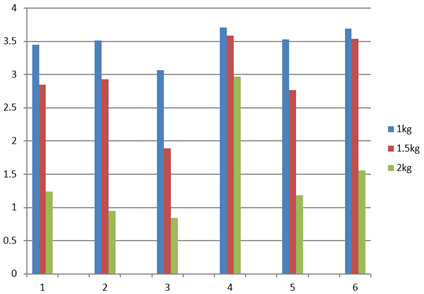
- 由實驗(四)推導出的受壓後的吸水量做成柱狀圖。
表3-12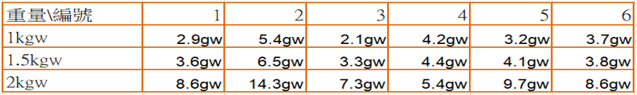圖3-4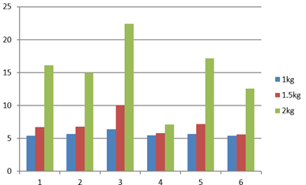
- 由理論推出吸水量與形變量跟自身吸水能力的關係
圖3-5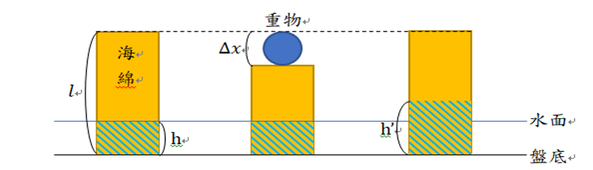
參數： h：水深、h’：鬆開海綿吸水之高度
𝑙：海綿高度、∆𝑥：形變量關係式: h^′=h×𝑙/(𝑙−∆𝑥) ，其中 𝑙/(𝑙−∆𝑥) 為放大比例
吸水量=最大吸水量×ℎ^′/𝑙=最大吸水量×(ℎ𝑙/(𝑙−∆𝑥))/𝑙=最大吸水量×ℎ/(𝑙−∆𝑥) 吸水率=吸水量/最大吸水量=ℎ/(𝑙−∆𝑥)經測量吃水深度為0.2cm，原本高度為3.8cm。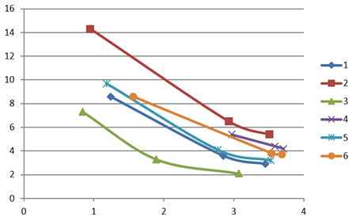圖3-6
將吸水量與壓縮後高度作圖吸水量=最大吸水量×ℎ/(𝑙−∆𝑥)註解:橫軸為壓縮後高度(cm)，縱軸為吸水量(ml)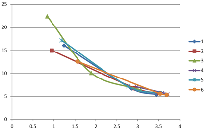圖3-7
將吸水率與壓縮後高度作圖吸水率=吸水量/最大吸水量=ℎ/(𝑙−∆𝑥)註解:橫軸為壓縮後高度(cm)，縱軸為吸水率(百分比)
- 將實驗(一)所得平均乾重做成柱狀圖。
誤差分析與結論
誤差分析
測量誤差
因為本實驗海綿選取的大小受到其中一塊最小海綿的限制，使海綿的底面積無法太大，使吸水量的數據測量出來容易受到誤差影響。理論誤差
在理論的計算中並無計算海棉在在有吸到水與沒吸到水之交界面的毛細現象，所以測量之值可能大於計算之值。
結論
實驗結果與理論還算相符，吸水量與壓縮後高度作圖後兩者有大略展現出反比的特徵，且當最大吸水量越大時線條也會越往右上。將吸水率與壓縮後高度作圖，不同編號的海綿也確實落在附近的位置，也符和公式的敘述，但還是有些誤差，希望能夠以更大量與更精確的實驗來再次進行實驗。